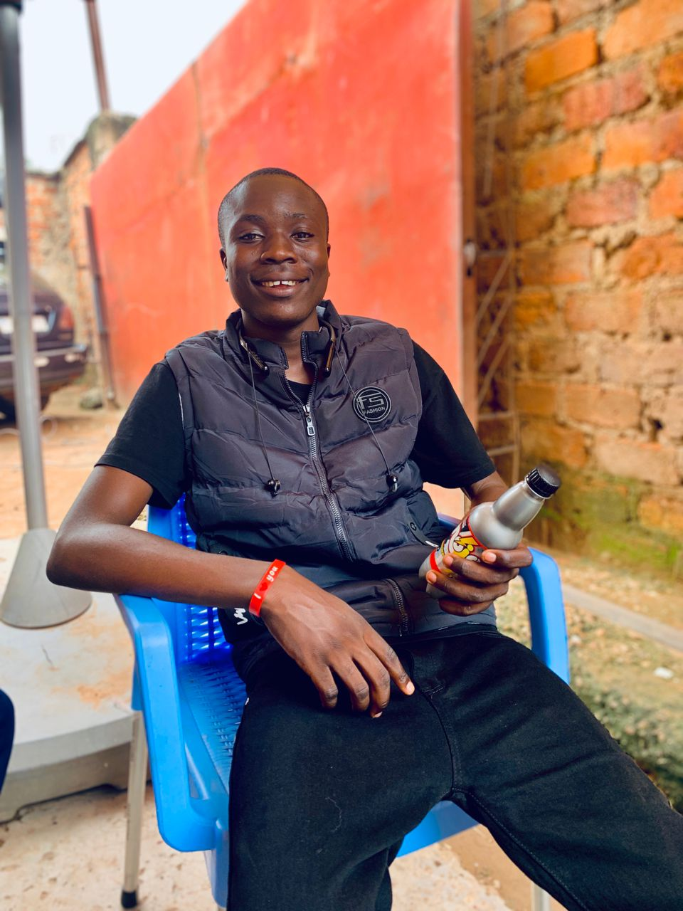

Etudiant en L2 et passionné par le web
Voir mes projets
Je m'appelle Jean-luc, je suis passionnné par le web et ceci est mon portfolio:).

Bonjour, je m'appelle Jean-luc et je suis étudiant dynamique
et motivé en informatique à l'UDBL. Passionné par les développements web, l'intelligence artificielle
et les designs graphiques, je suis constamment à la recherche des nouvelles
opportunités d'apprentissage et des défis stimulants.
Au cours de mes études, j'ai développé des solides compétences en programmation.
Je suis une personne rigoureuse, créative et j'aime travailler en équipe pour atteindre des objectifs communs.
Mon objectif est de contribuer à des projets innovants,
trouver un stage et maîtriser les Frameworks Lalavel
| CATEGORIES | COMPETENCES | NIVEAU |
|---|---|---|
| Programmation | HTML, CSS, JavaScript, Python | Avancé |
| Design | Figma, PhotoShop, Illistratror | Intermédiaire |
| Langues | Français(natif), Anglais(avancé) | Avancé |
| Outils | Git, VSCode, Suite Adobe, Suite Office | Avancé |
| Soft Skills | Communication, Marketing Digital, Résolutions des problèmes techniques | Avancé |